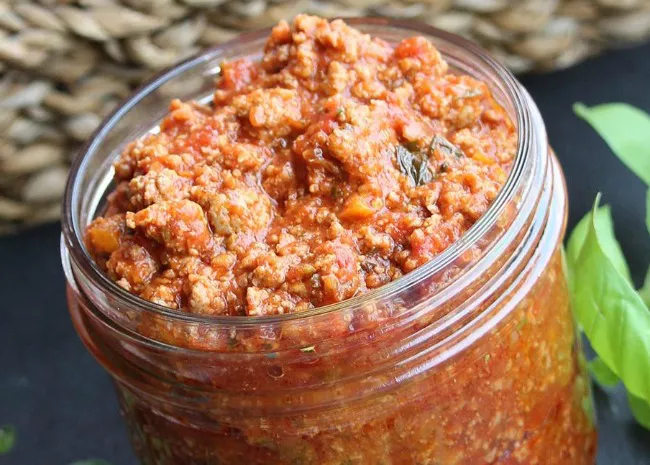

Mama Palomba's Spaghetti Sauce

Description
Hot and mild Italian sausages combine with ground chuck in this rich tomato and meat sauce. It simmers on the stove for hours, developing a flavorful and rich sauce. "Thick and meaty," says Michael, "A very flexible recipe and great to freeze for last minute needs."
Ingredients
- 2 (28 ounce) cans plum tomato puree
- ½ pound hot Italian sausage, sliced into bite-sized pieces
- ½ pound mild Italian sausage, sliced into bite-sized pieces
- 2 pounds ground chuck
- salt to taste
- ground black pepper to taste
- 1 large onion, diced
- 3 cloves garlic, diced
- 1 ½ cups water
- 1 (12 ounce) can tomato paste
- ¼ cup grated Parmesan cheese
- 1 tablespoon dried basil, or to taste
- 1 tablespoon dried oregano, or to taste
- 1 tablespoon dried parsley, or to taste
Steps
- Heat tomato puree in a large pot over medium-low heat; simmer while prepared the remaining ingredients.
- Heat a skillet over medium heat; cook and stir hot Italian sausage, mild Italian sausage, and ground chuck until browned and cooked through, 10 to 15 minutes. Season with salt and pepper. Remove cooked sausage and chuck with a slotted spoon and transfer to the simmering tomato puree.
- Cook and stir onion and garlic in the same skillet used for browning meat until onions are lightly browned, 5 to 8 minutes. Transfer onion mixture to meat mixture.
- Stir water and tomato paste in the same skillet used for onion mixture over low heat until slightly thickened, about 15 minutes; add to the sauce in the pot. Sprinkle Parmesan cheese, basil, oregano, and parsley over the sauce; stir to combine. Simmer over low heat, stirring occasionally, for 3 hours.